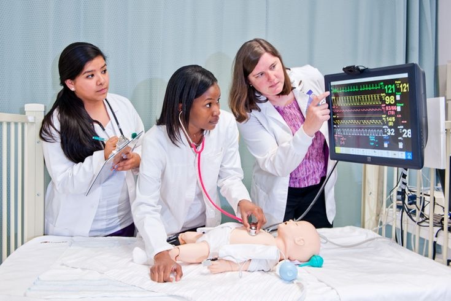

Por: Andrea Ruedas

El neonato requiere cuidados especiales durante sus primeros dias de vida. La enfermera debe garantizar un ambiente termico adecuado, mantener la higiene del cordon umbilical y vigilar constantemente los signos de bienestar del recien nacido.
Los signos vitales normales en un neonato son: frecuencia cardiaca entre 120 y 160 latidos por minuto, frecuencia respiratoria entre 40 y 60 respiraciones por minuto, y temperatura entre 36.5 y 37.5 grados centigrados. Su monitoreo constante es fundamental para detectar alteraciones a tiempo.
La lactancia materna exclusiva es la principal recomendacion para la alimentacion del neonato durante los primeros seis meses. La enfermera cumple un rol educativo importante orientando a la madre sobre la tecnica correcta de lactancia, la frecuencia de las tomas y los signos de una alimentacion adecuada.
El neonato tiene un sistema inmunologico inmaduro, por lo que es altamente vulnerable a las infecciones. El personal de enfermeria debe aplicar medidas estrictas de bioseguridad, como el lavado de manos, el uso de guantes y el manejo aseptico de los equipos utilizados en la atencion.